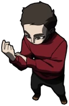

|  | Joui era um homem de 23 anos com 1,80 metros de altura,[fn 2] era nipo-brasileiro, com fenótipos amarelos do leste da Ásia, mais precisamente do Japão. Possuía um cabelo curto e liso, olhos castanhos escuros, nariz afinado e rosto fino. Ele tinha um porte físico esguio e atlético por toda sua experiência como ginasta, andando sempre com uma postura correta.[8] A princípio, vestia uma camisa comprida vermelha de gola alta. Quase sempre era visto utilizando uma pulseira que continha 3 pingentes com as bandeiras do Brasil, Itália e Japão, representando os países de origem de seus amigos mais próximos:. |
Joui Jouki foi um dos protagonistas da série Ordem Paranormal, presente em O Segredo na Floresta, Desconjuração e Calamidade.
Ele era um ginasta olímpico que, durante uma viagem para o Brasil junto de seus amigos, acabou sofrendo um ataque por uma criatura Paranormal, sendo salvo por Elizabeth Webber e Thiago Fritz. Os dois acabam virando seus mentores, e então Joui se junta à Ordo Realitas.
Joui foi um dos membros designados para o Caso de Carpazinha, fazendo parte da Equipe E junto dos seus mentores. Ele foi um dos sobreviventes da missão, mesmo ficando à beira da insanidade após ver a trágica cena do fim de Santo Berço.[3]
Ele retornou em Ordem Paranormal: Desconjuração, tendo o objetivo de salvar Elizabeth Webber que havia sido sequestrada por um misterioso grupo Ocultista chamado Escriptas. Durante a missão Joui se torna o líder da Força D, porém, acaba fazendo um acordo com a Seita das Máscaras,[4] juntando-se ao grupo com duas condições: parar Kian e manter seus companheiros seguros.[5]
Joui voltou posteriormente no 2º episódio de Calamidade, enraivecido e livre do controle da Seita das Máscaras após ser afetado pelo Ódio do Diabo, sendo responsável pelo assassinato de vários Escriptas na Mansão Leone enquanto estava fora de si.[6] Ele continuou junto com a Equipe Abutres na busca pelas Relíquias da Calamidade, sendo um dos Marcados do lado da Ordo Realitas.